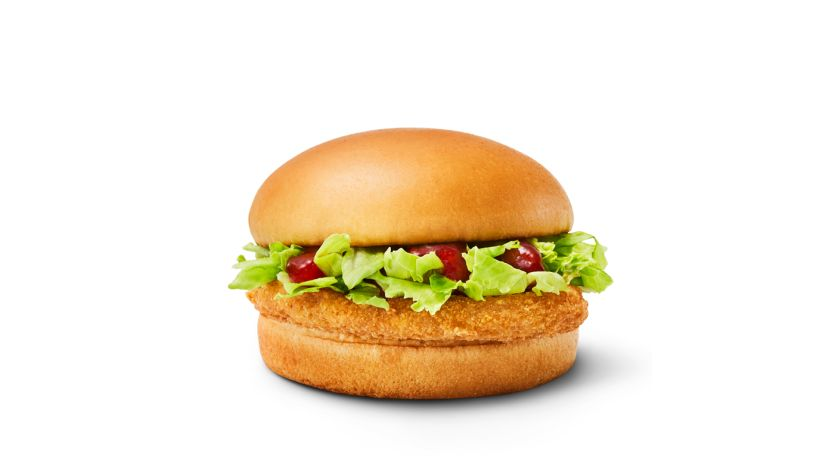

- App
- McDonald's Nieuwsbrief
- Werken bij McDonald's
- Franchising
- Zoeken
- Vind een restaurant
- Menu
- Newsroom Pers
- Services
- familie
- Ook dat doet McDonald's

Chili Chicken
1.316 KJ | 313 Kcal
Een kiplekkere burger met een licht pittige twist. Geniet van een juicy kipburger met een krokant laagje, frisse
sla en zoete chilisaus.
Voedingsinformatie
Voedingswaarde
Ingrediënten en allergenen
De bovenstaande voedingsinformatie and informatie in de Nutrition Calculator staan niet garant voor eventuele
aanpassingen aan het product.